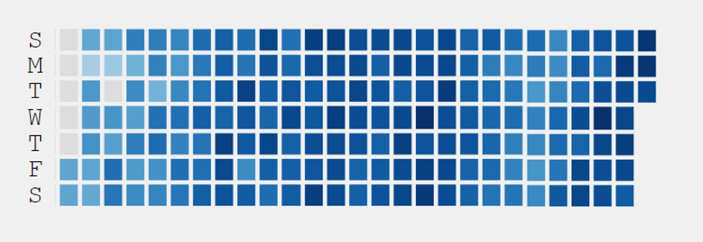
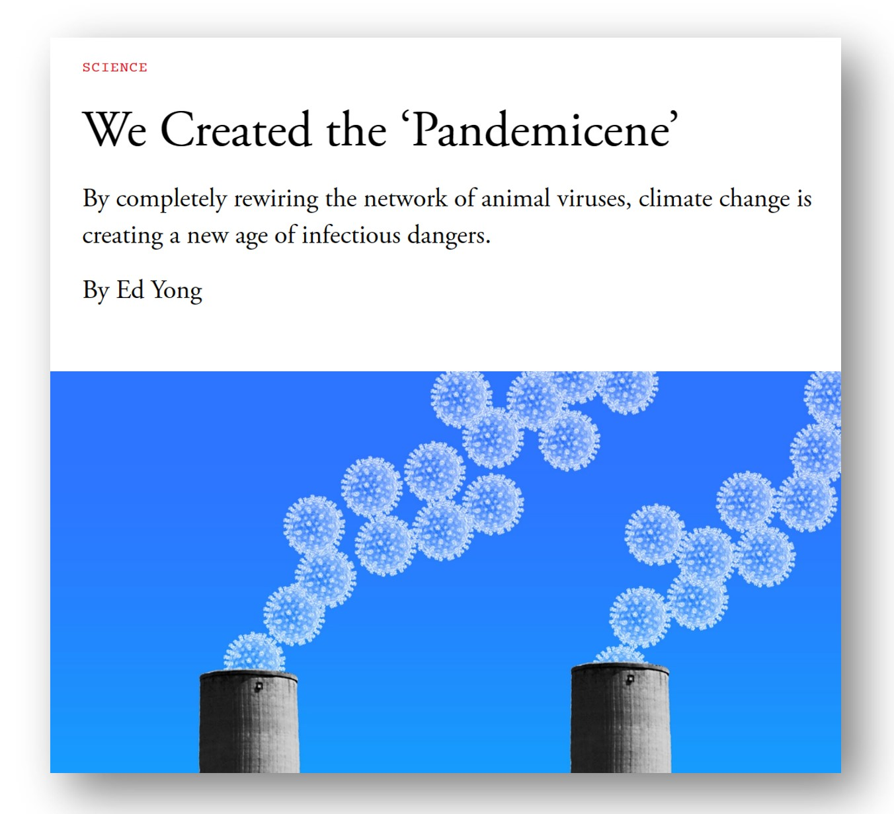
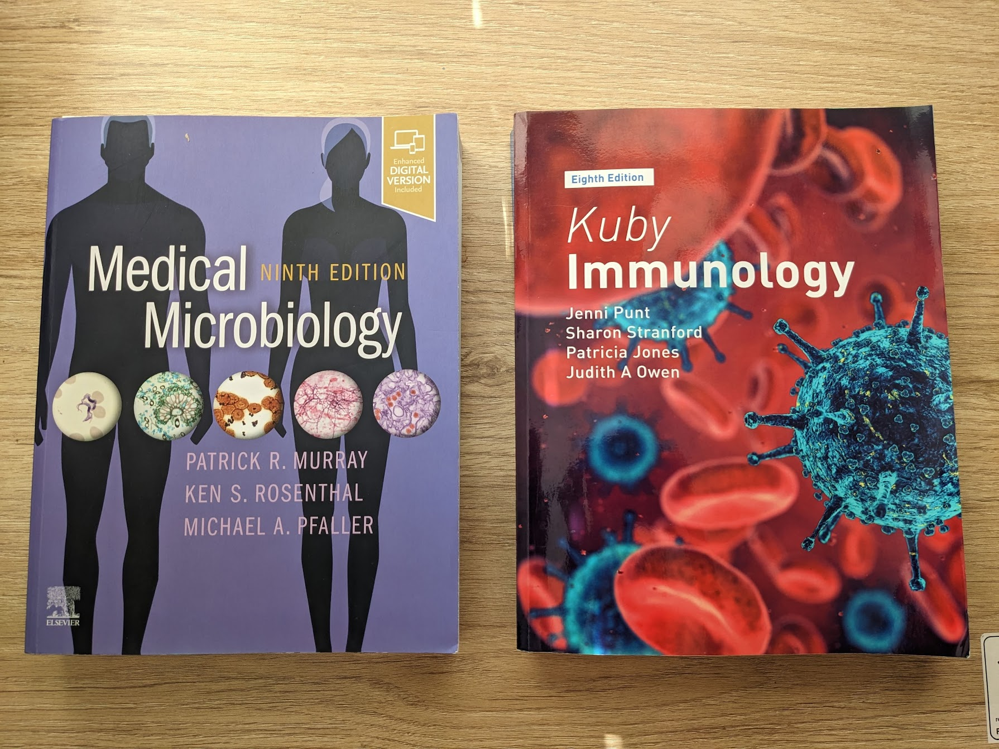

I like complexity, and I like challenges. When a new topic fascinates me, I want to devote all of my time to it. In 2012, I was working as a quant in energy trading when I became so captivated by the topic of machine learning that I abruptly moved cross-country to San Francisco and spent a decade learning as much as I could about machine learning, AI, data ethics, and algorithmic harms. In 2022, I became fascinated by a new topic: immunology. I completed 7 online courses last year, am currently taking 4 more courses, and have created over 2,000 immunology-related flashcards for myself, which I spend time on daily. (I will write more about how I use Anki flashcards in a future post.)
I found immunology to be both overwhelming and fascinating. The field is full of jargon, and there is a steep curve just to learn the language: IL-2, IL-4, IL-5, IL-12, IL-13, IL-18, CD-3, CD-22, CD-34, CD-47, CD-155, C3, C5, C8, and so on (lots of letter/number combinations, abbreviations, and acronyms! But underneath them, the mechanisms are fascinating). The more I studied, the more I wanted to learn. It became clear that I needed a formal program to go deeper and to provide appropriate context, so I started applying to graduate school.

Back to School
I was delighted to be accepted to a Masters in Immunology graduate program, and after eager anticipation, last month I officially began my formal degree. While my ultimate goal is to apply my machine learning and data ethics expertise to the field, I want to make sure I fully understand the relevant immunology first. Too often machine learning practitioners unthinkingly grasp for a nail to use their hammer on, without first having the necessary in-depth knowledge of the underlying domain, its data, its context, and its actual challenges.
The more I learn about immunology, the more I realise how complex, vast, and full of open questions and not-yet-understood phenomena the field is. It was only in 2021 that researchers proved Epstein-Barr virus causes multiple sclerosis. Researchers are making new discoveries about links between viral infections and neurodegenerative diseases, such as Alzheimer’s. A study in late 2022 found a possible mechanism to explain the fact that varicella zoster virus significantly increases risk of stroke. Unusually severe outbreaks of RSV and Group A Strep (a bacteria that can often follow as a secondary infection after a virus) made headlines in the past few months. A variety of viruses have long been known to sometimes trigger autoimmune diseases or cancer, yet there is still much to discover about these relationships.
Living in the Pandemicene
Even as the ongoing covid pandemic continues to cause death and disability, science journalist Ed Yong warned that we are now living in the pandemicene, a period with increasingly likely pandemics. Climate change is crowding species into new habitats, raising the risks of viral spillover from the estimated 40,000 viruses that inhabit mammals. Immunology, virology, and microbiology will become even more important in the coming decades.

Mathematical Biology and AI in Medicine
For over 20 years, my focus has been on mathematics, computer science, and data ethics. I studied mathematics, computer science, and linguistics as an undergraduate; earned a PhD in mathematics; and then spent 12 years working in a mix of industry and academia as a data scientist, teacher, and researcher. I am best known for my work as cofounder of fast.ai, creator of the most popular deep learning courses in the world, and for previously serving as the founding director of the University of San Francisco Center for Applied Data Ethics. Over the years, I have had a recurring interest in medicine, doing mathematical modelling of cell processes as part of a Howard Hughes Medical Institute fellowship while I was in graduate school, publishing about machine learning in medicine for The Boston Review, and being an invited keynote speaker for Stanford’s AI in Medicine symposium.
The value of domain expertise
Core to the mission of fast.ai is the idea that domain expertise is crucial. In our very first post announcing the launch of fast.ai in 2016, my cofounder Jeremy Howard wrote, “Only domain experts: fully understand and appreciate what are the most important problems in their field; have access to the data necessary to solve those problems; and understand the opportunities and constraints to implementing data driven solutions.” It is dangerous for machine learning practitioners to apply machine learning to fields in which they have only superficial knowledge (unless working closely with domain experts from end-to-end). Collaborative, interdisciplinary, and career changing work has always fascinated me. I have written about how necessary qualitative humanities research is to the field of AI. I previously taught software engineering to adult women changing careers, and long-believed that career changers have something special to offer. I am now taking my own advice, and delving into immunology, with the long-term goal of integrating this new knowledge with my data ethics and machine learning skills.

After having been in a more “established” place in my career for a while, it is intimidating to publicly start off on a new branch like this. However, it’s also exciting, and I hope to share some of my journey as an immunology student along the way through blog posts and essays, just as I’ve always encouraged fast.ai students to do.